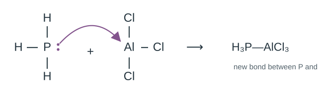
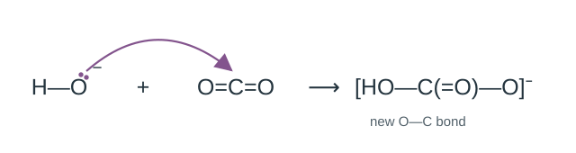

\(\ce{NH3}\) ให้คู่อิเล็กตรอนโดดเดี่ยวบน N เพื่อสร้างพันธะกับ B จึงเป็นเบสลิวอิส ส่วน \(\ce{BF3}\) รับคู่อิเล็กตรอนที่ B จึงเป็นกรดลิวอิส ปฏิกิริยานี้ไม่มีการถ่ายโอนโปรตอน
คำถาม 3 · ระบุกรดและเบสลิวอิส
ใช้ตำแหน่งคู่อิเล็กตรอนและพันธะใหม่อธิบายคำตอบ
3.1

\(\ce{PH3}\) เป็นเบส เพราะให้คู่อิเล็กตรอนบน P ส่วน \(\ce{AlCl3}\) เป็นกรด เพราะรับคู่อิเล็กตรอนที่ Al เกิดพันธะ P–Al
3.2

\(\ce{OH- + CO2 -> HCO3-}\)
\(\ce{OH-}\) เป็นเบส เพราะให้คู่อิเล็กตรอนบน O ส่วน \(\ce{CO2}\) เป็นกรด เพราะรับคู่อิเล็กตรอนที่ C เกิดพันธะ O–C ใหม่
ลองเอง · ระบุผู้ให้และผู้รับคู่อิเล็กตรอน
กรด–เบสลิวอิส
\(\ce{BF3 + F- -> BF4-}\)
ระบุกรด เบส และพันธะใหม่ พร้อมเหตุผล
F⁻ เป็นเบส ให้คู่อิเล็กตรอน; BF₃ เป็นกรด รับคู่อิเล็กตรอนที่ B เกิดพันธะ B–F ใหม่
Recall the foundations, then follow ions, protons and electron pairs
Complete the notes under each heading, then apply the principles to reactions and practice questions.
1 Properties and evidence
Properties of acidic solutions
They turn blue litmus red and have pH below 7 at 25 °C. They react with suitable metals, carbonates and bases. Some food acids taste sour; tasting is not a chemical test.
Properties of basic solutions
They turn red litmus blue and have pH above 7 at 25 °C. They react with acids. Mobile ions allow acidic and basic solutions to conduct electricity, but conductivity alone cannot identify an acid or base: salt solutions such as NaCl also conduct.
Recall · Judge from evidence
1. Solution A turns red litmus blue. How is it classified? 2. Solution B leaves red litmus unchanged. Must it be acidic? 3. Solution C conducts electricity. Is this enough to classify it as acidic or basic? 4. At 25 °C, classify solutions of pH 3, 7 and 10.
1. Basic. 2. No: acidic and neutral solutions can both leave red litmus unchanged; more evidence is needed. 3. No: salt solutions can also conduct. 4. Acidic, neutral, basic.
2 Reaction patterns to remember
Acids and suitable metals
Dilute non-oxidizing acids such as HCl react with suitable metals such as Mg or Zn to form a salt and hydrogen. This pattern does not apply to every metal or every acid.
\(\ce{Zn(s) + 2HCl(aq) -> ZnCl2(aq) + H2(g)}\)
Acids and carbonates or hydrogen carbonates
The products are a salt, water and carbon dioxide.
Neutralization between an acid and a hydroxide base produces a salt and water. The final pH depends on the species and amounts; it is not always 7.
\(\ce{HCl(aq) + NaOH(aq) -> NaCl(aq) + H2O(l)}\)
Recall · Predict products
Write the products and balance each equation. 1. Mg + HCl → … 2. Na₂CO₃ + HCl → … 3. HNO₃ + KOH → … Identify any gaseous product.
\(\ce{Mg + 2HCl -> MgCl2 + H2}\)
\(\ce{Na2CO3 + 2HCl -> 2NaCl + H2O + CO2}\)
\(\ce{HNO3 + KOH -> KNO3 + H2O}\)
Reaction 1 produces H₂; reaction 2 produces CO₂. Reaction 3 has no gaseous product.
Reaction patterns and their limits
Bubbles alone do not identify a gas; consider the reactants or gas-test evidence. Do not assume that bases never react with metals: Al and Zn can react with strong bases under suitable conditions.
3 Types and common examples
Binary acids
They contain two elements: hydrogen and one other nonmetal. Examples in water include \(\ce{HF}\), \(\ce{HCl}\), \(\ce{HBr}\), \(\ce{HI}\) and \(\ce{H2S}\).
Oxyacids
They contain hydrogen, oxygen and another element. Examples are \(\ce{HNO3}\), \(\ce{H2SO4}\), \(\ce{H3PO4}\) and \(\ce{H2CO3}\). Also remember the common organic acid \(\ce{CH3COOH}\), acetic acid.
Common bases and salts
Common hydroxide bases include \(\ce{NaOH}\), \(\ce{KOH}\) and \(\ce{Ca(OH)2}\). \(\ce{NH3}\) is a base without OH in its formula. Salts such as \(\ce{NaCl}\), \(\ce{NH4Cl}\) and \(\ce{Na2CO3}\) are ionic compounds; a salt solution need not be neutral.
Recall · Classify examples
Classify HBr, HNO₃, H₂SO₄, NaOH, NH₃ and Na₂SO₄ as binary acid, oxyacid, base or salt. Explain why H in a formula is not sufficient to identify an acid.
HBr: binary acid. HNO₃ and H₂SO₄: oxyacids. NaOH and NH₃: bases. Na₂SO₄: salt. NH₃ contains H but acts as a base in water, so the relevant behaviour and reaction must also be considered.
4 Everyday acids, bases and salts
Connect names, formulas and familiar examples. Everyday products are mixtures; ingredients vary by formulation.
Acids in foods and drinks
Substance and formula
Context or use
acetic acid \(\ce{CH3COOH}\)
vinegar
citric acid \(\ce{C6H8O7}\)
lemons and other citrus fruits
lactic acid \(\ce{C3H6O3}\)
yogurt and fermented milk
ascorbic acid \(\ce{C6H8O6}\)
vitamin C
Recall · Make everyday connections
Recall two substances in this group: give their names, formulas and familiar contexts without looking at the list.
acetic acid \(\ce{CH3COOH}\) — vinegar; citric acid \(\ce{C6H8O7}\) — lemons and other citrus fruits
Other familiar acid contexts
Substance and formula
Context or use
carbonic acid \(\ce{H2CO3}\)
CO₂ dissolved in water, as in carbonated water
phosphoric acid \(\ce{H3PO4}\)
used in some cola drinks
hydrochloric acid \(\ce{HCl}\)
gastric fluid and some toilet cleaners
sulfuric acid \(\ce{H2SO4}\)
electrolyte in lead–acid batteries
Recall · Make everyday connections
Recall two substances in this group: give their names, formulas and familiar contexts without looking at the list.
carbonic acid \(\ce{H2CO3}\) — CO₂ dissolved in water, as in carbonated water; phosphoric acid \(\ce{H3PO4}\) — used in some cola drinks
Hydroxide bases and ammonia
Substance and formula
Context or use
sodium hydroxide / caustic soda \(\ce{NaOH}\)
soap production and some drain cleaners
potassium hydroxide \(\ce{KOH}\)
liquid or soft soap production
calcium hydroxide / slaked lime \(\ce{Ca(OH)2}\)
its clear solution is limewater
magnesium hydroxide \(\ce{Mg(OH)2}\)
milk of magnesia suspension and some antacids
ammonia \(\ce{NH3}\)
aqueous ammonia in some cleaners
Recall · Make everyday connections
Recall two substances in this group: give their names, formulas and familiar contexts without looking at the list.
sodium hydroxide / caustic soda \(\ce{NaOH}\) — soap production and some drain cleaners; potassium hydroxide \(\ce{KOH}\) — liquid or soft soap production
Salts with basic behaviour
Substance and formula
Context or use
sodium hydrogen carbonate \(\ce{NaHCO3}\)
baking soda; mildly basic solution
sodium carbonate \(\ce{Na2CO3}\)
washing soda; basic solution
sodium hypochlorite \(\ce{NaClO}\)
active ingredient in some bleaches; basic solution
calcium carbonate \(\ce{CaCO3}\)
limestone, some chalk and antacids; sparingly soluble but reacts with acids
Recall · Make everyday connections
Recall two substances in this group: give their names, formulas and familiar contexts without looking at the list.
Baking soda is NaHCO₃; baking powder is a mixture containing hydrogen carbonate and an acid component. Washing soda is Na₂CO₃. Limewater is Ca(OH)₂ solution; limestone is CaCO₃. Ordinary soap contains fatty-acid salts, such as sodium or potassium salts; NaOH is a manufacturing reactant, not the main substance in the finished soap.
5 Ions to know and use
Organize each ion by name, formula and charge, then hide the answers and recall them.
Cations: +1
Formula and charge
Ion name
H+
hydrogen ion / proton
H3O+
hydronium
Li+
lithium
Na+
sodium
K+
potassium
Cu+
copper(I)
Ag+
silver
NH4+
ammonium
Cations: +2
Formula and charge
Ion name
Mg2+
magnesium
Ca2+
calcium
Sr2+
strontium
Ba2+
barium
Zn2+
zinc
Cu2+
copper(II)
Fe2+
iron(II)
Pb2+
lead(II)
Mn2+
manganese(II)
Recall · Recall the recent ion groups
Write the name, formula and charge of each ion: hydrogen ion / proton, hydronium, magnesium, calcium
1. Write the formulas and charges of ammonium, nitrate, sulfate, carbonate and phosphate. 2. Name \(\ce{CH3COO-}\), \(\ce{HCO3-}\) and \(\ce{HPO4^2-}\). 3. Write salts formed from \(\ce{Ca^2+}\) and \(\ce{NO3-}\), and from \(\ce{NH4+}\) and \(\ce{SO4^2-}\).
3. \(\ce{Ca(NO3)2}\), \(\ce{(NH4)2SO4}\) — total positive and negative charges must balance.
6 Names and formulas to recall
Naming binary acids
Use hydro- + nonmetal root + -ic acid: HCl(aq), hydrochloric acid; HBr(aq), hydrobromic acid. HCl(g) is hydrogen chloride, distinct from its aqueous acid name.
Naming oxyacids
Link the name to the anion: -ate → -ic acid, -ite → -ous acid. Nitrate → nitric acid; nitrite → nitrous acid; sulfate → sulfuric acid; sulfite → sulfurous acid. Learn the conventional spellings.
Naming hydroxide bases and salts
Name the cation then the anion: NaOH, sodium hydroxide; Ca(OH)₂, calcium hydroxide; Na₂SO₄, sodium sulfate; NH₄Cl, ammonium chloride. Include the oxidation state for variable-charge metals, e.g. FeCl₂, iron(II) chloride. NH₃ is ammonia; CH₃COOH is acetic acid.
Recall · Formulas → names
Name \(\ce{HCl(aq)}\), \(\ce{HNO2}\), \(\ce{H2SO4}\), \(\ce{KOH}\), \(\ce{CaCO3}\) and \(\ce{CH3COONa}\).
Dissolved ionic compounds such as NaCl separate into their pre-existing ions. Molecular substances such as HCl produce ions by reacting with water. Aqueous acid–base behaviour depends on the relative concentrations of H₃O⁺ and OH⁻; other ions do not by themselves make a solution acidic or basic.
An Arrhenius acid
A substance that increases the concentration of \(\ce{H3O+}\) in water, often written in shorthand as producing \(\ce{H+}\).
An Arrhenius base
A substance that increases the concentration of \(\ce{OH-}\) in water.
Recall before writing equations
1. Which aqueous ion is increased by an Arrhenius acid, and which by an Arrhenius base? 2. NaCl → Na⁺ + Cl⁻ produces a cation. Does that make NaCl an acid?
1. Acids increase H₃O⁺ (H⁺ shorthand); bases increase OH⁻. 2. No. Na⁺ is not H₃O⁺, and a positive charge alone does not identify an acid.
Protons and hydronium ions
\(\ce{H+}\) is a hydrogen ion, or proton. In water it associates with water molecules; \(\ce{H3O+}\) denotes hydronium. We write \(\ce{H+ + H2O -> H3O+}\). \(\ce{H+(aq)}\) is shorthand, not a bare isolated proton in water.
Example 1 · Read the ions formed in water
Use the equations to explain the acid or base behaviour.
1
\(\ce{HCl(aq) -> H+(aq) + Cl-(aq)}\)
\(\ce{HCl}\) is an acid because it increases \(\ce{H+}\) concentration in water.
2
\(\ce{CH3COOH(aq) <=> CH3COO-(aq) + H+(aq)}\)
\(\ce{CH3COOH}\) is an acid because it increases \(\ce{H+}\) concentration in water.
3
\(\ce{NaOH(s) -> Na+(aq) + OH-(aq)}\)
\(\ce{NaOH}\) is a base because it increases \(\ce{OH-}\) concentration in water.
4
\(\ce{Ca(OH)2(s) -> Ca^2+(aq) + 2OH-(aq)}\)
\(\ce{Ca(OH)2}\) is a base because it increases \(\ce{OH-}\) concentration in water.
Question 1 · Complete the equations
Write the balanced equation and identify the Arrhenius acid or base in each item.
An acid; H₃O⁺ is formed. Check atoms and total charge on each side.
Scope of Arrhenius theory
It concerns aqueous solutions. It does not directly describe the gas-phase reaction of \(\ce{HCl(g)}\) with \(\ce{NH3(g)}\), where water is not the solvent.
8 Brønsted–Lowry theory
A Brønsted–Lowry acid
A proton (\(\ce{H+}\)) donor.
A Brønsted–Lowry base
A proton (\(\ce{H+}\)) acceptor.
Recall proton donation and acceptance
Does an acid donate or accept H⁺? What does a base do? When NH₃ becomes NH₄⁺, is a proton accepted or donated, and how does the charge change?
An acid donates H⁺; a base accepts H⁺. NH₃ accepts H⁺ and is the base. Its charge changes from 0 to +1.
Tracking proton transfer
Match each reactant with its corresponding product. Loss of one \(\ce{H+}\) identifies the proton donor; gain of one \(\ce{H+}\) identifies the acceptor. Check both hydrogen count and charge.
Example 2 · Who donates and who accepts a proton?
1
\(\ce{HCl(g) + NH3(g) -> NH4Cl(s)}\)
Identify the acid, base and change in each species.
\(\ce{HCl}\) donates \(\ce{H+}\) and becomes \(\ce{Cl-}\), so it is the acid. \(\ce{NH3}\) accepts \(\ce{H+}\) to form \(\ce{NH4+}\), so it is the base. The product is ionic \(\ce{NH4Cl}\).
2
\(\ce{HCl(g) + H2O(l) -> H3O+(aq) + Cl-(aq)}\)
Identify the acid, base and change in each species.
\(\ce{HCl}\) is the acid: it donates a proton to water. \(\ce{H2O}\) is the base: it accepts the proton to form \(\ce{H3O+}\).
3
\(\ce{NH3(g) + H2O(l) <=> NH4+(aq) + OH-(aq)}\)
Identify the acid, base and change in each species.
\(\ce{NH3}\) is the base: it accepts a proton to form \(\ce{NH4+}\). \(\ce{H2O}\) is the acid: it donates a proton and becomes \(\ce{OH-}\).
Water in different reactions
Water accepts a proton from \(\ce{HCl}\) but donates a proton to \(\ce{NH3}\). Its role depends on the reaction being considered.
Is this solution acidic or basic under Brønsted–Lowry theory? Identify the ion that accepts or donates a proton and explain.
\(\ce{CH3COO-}\) accepts \(\ce{H+}\) from \(\ce{H2O}\) to form \(\ce{CH3COOH}\), so it acts as a base. Water donates the proton and forms \(\ce{OH-}\), making the solution basic. \(\ce{Na+}\) is not the proton acceptor in this reaction.
Try it independently · Track protons in new reactions
Identify both reactant roles and explain the change in hydrogen count and charge.
CO₃²⁻ accepts H⁺ to become HCO₃⁻ and is the base. H₂O donates H⁺ and becomes OH⁻, so it is the acid.
9 Lewis theory
When no proton is transferred
\(\ce{NH3 + BF3 -> H3N-BF3}\)
Compare hydrogen counts before and after reaction. Is H⁺ transferred? In the diagram below, which atom supplies the electron pair for the new bond?
No H⁺ is transferred. The nitrogen lone pair in NH₃ forms a bond with boron in BF₃, motivating an electron-pair model.
A Lewis acid
An electron-pair acceptor in bond formation.
A Lewis base
An electron-pair donor in bond formation.
Example 3 · Follow an electron pair
\(\ce{NH3(g) + BF3(g) -> H3N-BF3(s)}\)
Only the reacting lone pair is shown. The curved arrow follows the pair forming a new bond, not a proton.
\(\ce{NH3}\) donates the nitrogen lone pair to form a bond to boron, so it is the Lewis base. \(\ce{BF3}\) accepts that pair at boron, so it is the Lewis acid. No proton is transferred.
Question 3 · Identify Lewis acids and bases
Use the electron-pair location and new bond to explain each answer.
3.1
\(\ce{PH3}\) is the base: phosphorus donates a lone pair. \(\ce{AlCl3}\) is the acid: aluminium accepts it, forming a P–Al bond.
3.2
\(\ce{OH- + CO2 -> HCO3-}\)
\(\ce{OH-}\) is the base: its oxygen donates a lone pair. \(\ce{CO2}\) is the acid: its carbon accepts the pair, forming a new O–C bond.
Try it independently · Electron-pair donors and acceptors
Lewis acid and base
\(\ce{BF3 + F- -> BF4-}\)
Identify the acid, base and new bond, with reasons.
F⁻ is the base, donating a lone pair. BF₃ is the acid, accepting it at B to form a new B–F bond.
Lewis acid and base
\(\ce{NH3 + H+ -> NH4+}\)
Identify the acid, base and new bond, with reasons.
NH₃ is the base, donating its nitrogen lone pair. H⁺ is the acid, accepting that pair in a new N–H bond.
10 Compare the three theories
Complete the definitions and deciding feature for each theory.
Arrhenius
Acids increase \(\ce{H3O+}\); bases increase \(\ce{OH-}\) in aqueous solution.
Brønsted–Lowry
Acids donate protons; bases accept protons. Track \(\ce{H+}\) transfer. Water need not be the solvent.
Lewis
Acids accept electron pairs; bases donate electron pairs to form a bond. Proton transfer is not required.
Keep the directions distinct
A Brønsted–Lowry acid donates a proton, while a Lewis acid accepts an electron pair. A Brønsted–Lowry base accepts a proton, while a Lewis base donates an electron pair. State what is being transferred.
11 Independent practice
Consider the forward reaction. Identify the reactant with the requested role and give a brief reason.
C₂H₅NH₂ accepts H⁺ to form C₂H₅NH₃⁺ and is the base.
Question 9 · Lewis acids
9.1
\(\ce{BF3 + F- -> BF4-}\)
BF₃ is the acid: boron accepts a lone pair from F⁻.
9.2
\(\ce{H+ + H2O -> H3O+}\)
H⁺ is the acid: it accepts an oxygen lone pair from H₂O to form an O–H bond.
Final recall
1. Give formulas and charges for sulfate and sulfite. 2. Recall acid and base definitions for all three theories. 3. Give one everyday acid and one salt with a basic aqueous solution, including formulas.
1. SO₄²⁻ and SO₃²⁻. 2. Arrhenius: increase H₃O⁺ / OH⁻ in water; Brønsted–Lowry: donate / accept H⁺; Lewis: accept / donate an electron pair. 3. For example, acetic acid CH₃COOH in vinegar, and baking soda NaHCO₃.